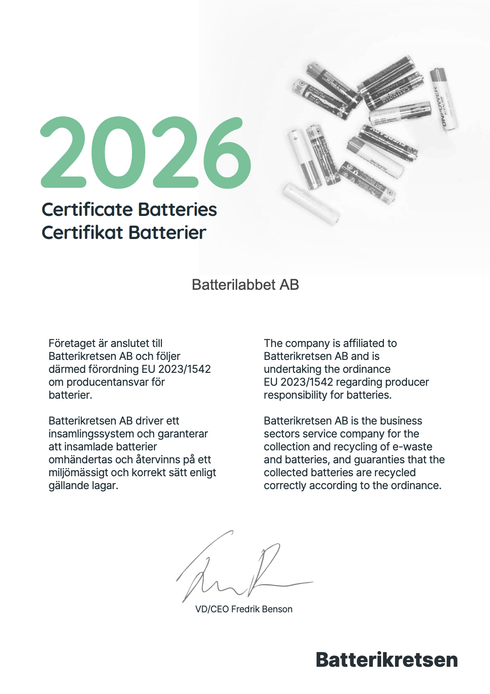
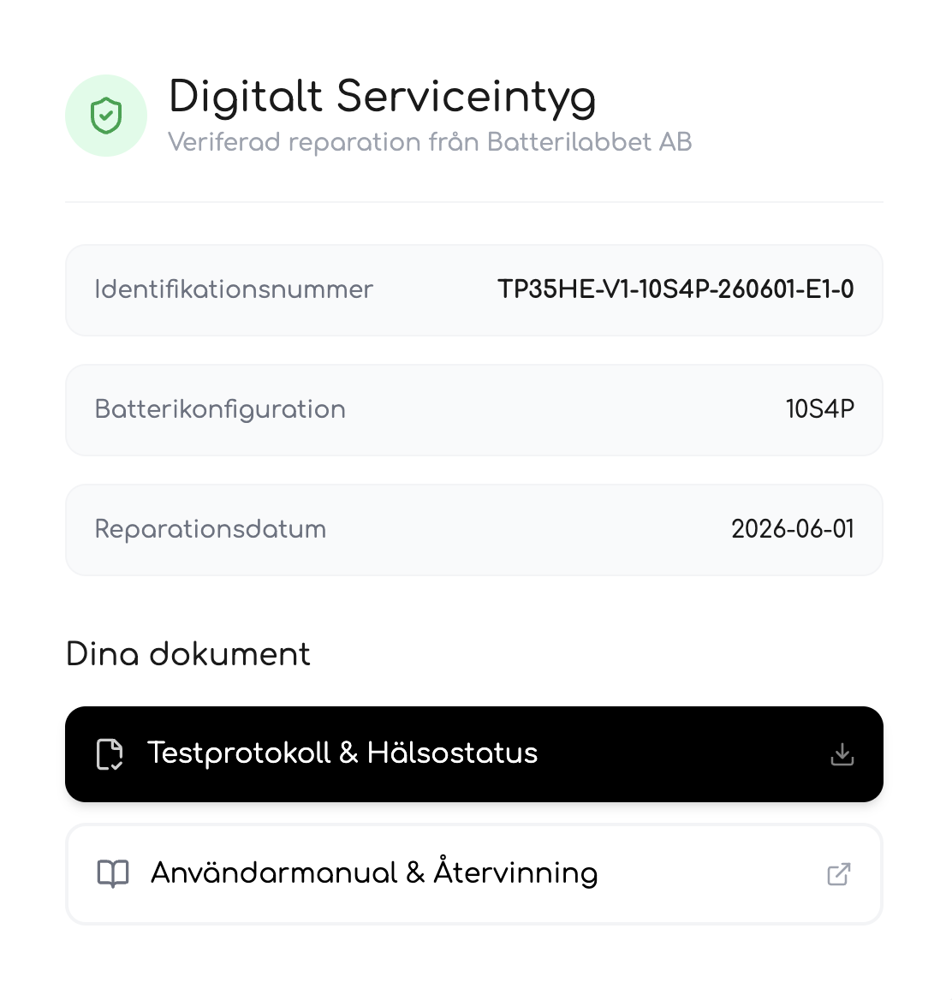
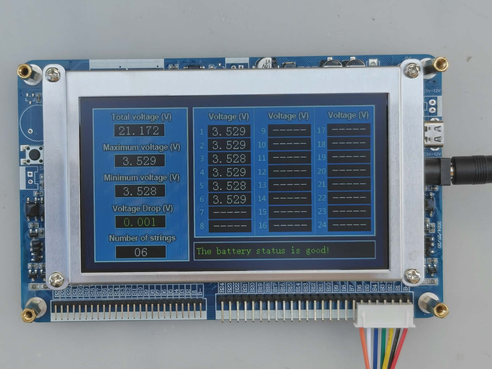

Säkerhet & Kvalitet
Nedan kan du läsa lite om vårt kvalitetsarbete. Vi tror på transparens, därför delar vi med oss av hur vårt kvalitetsarbete går till
Säkrast i Sverige
Vi tar säkerhet längre än någon annan. Vi vidtar bland annat följande åtgärder:
- Verifierad säkerhet: Vår reparation uppfyller EU:s strikta krav för hälsa, säkerhet och miljöskydd. Vi är anslutna till El-Kretsen och följer EU 2023/1542 om producentansvar.
- Laboratorietestad hållbarhet: Processen har genomgått omfattande stresstester för att garantera säker drift i tuffa miljöer.
- Miljöansvar: Vi säkerställer att materialval och hantering följer gällande miljödirektiv däribland RoHS 2 (2011/65/EU). Genom att vara anslutna till El-Kretsen säkerställer vi att allt avfall från de batterier vi renoverar och har renoverat tas hand om på rätt sätt.

Du kan ladda ner certifikatet från Batterikretsen (El-Kretsen)
Digitalt serviceintyg
Med varje reparerat batteri finns en QR-kod som leder till vårt digitala serviceintyg, du får även en länk till detta i och med leverans av batteriet. I serviceintyget medföljer en användarmanual samt ett testprotokoll för ditt batteri som visar resultaten från de kvalitetskontrollerna batteriet genomgått innan det lämnar vår verkstad. Vi gör det här för att du ska känna dig trygg med ditt köp och ta hand om ditt reparerade batteri på rätt sätt.

Så här ser ditt digitala serviceintyg ut
Garanti på vår kompetens
När du handlar av eller reparerar hos oss ska du inte bara få ett fungerande batteri, du ska få svart på vitt att jobbet är korrekt utfört. Därför erbjuder vi alltid 24 månaders garanti på våra arbeten.
Ta hand om din investering
Våra batterier är byggda för att tåla vardagens påfrestningar och nordiskt klimat. Genom att följa några enkla skötselråd kan du förlänga batteriets livslängd avsevärt.
- Specifik manual: Du får en skräddarsydd användarmanual för just din batterimodell genom det digitala serviceintyget. Hittar du inte ditt serviecintyg? Kontakta oss så hjälper vi dig.
- Allmänna råd: För generella tips om hur du maximerar räckvidd och hållbarhet kan du läsa vår allmänna manual nedan.
Testade för din säkerhet
Vi utför inte bara reparationer, vi gör uppgraderingar. Genom att installera helt nya, optimerade cellpaket i ditt befintliga batteriskal ger vi din elcykel nytt liv med ofta bättre prestanda än när den var ny. Varje batteripack som lämnar verkstaden genomgår en strikt kvalitetskontroll där vi mäter och loggar:
- Spänning och inre resistans på pack- och cellnivå: För att se att batteriet uppfyller våra kvalitetskrav.
- Resistans över kontakter: För att säkerställa att det begagnade batteriskalet är i nyskick.


Så här ser delar av testningen ut